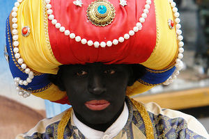

Hispachan
 De: La Frikipedia, la enciclopedia extremadamente seria.
De: La Frikipedia, la enciclopedia extremadamente seria.
| De la serie sitios web de ayer y de hoy:
|
| Hispachan
|
| 
|
| Usuario primedio de Hispachan
|
|
| Dirección:
|
[]
|
| Se dedica a:
|
Terrorismo, parafilias
|
| País de origen:
|
Uganda
|
| Año de fundición:
|
2012
|
| Propietario:
|
Dios
|
| Creador:
|
Zeta
|
| Estado actual:
|
Activo e intensificándose
|
«No somos el 4chan en español, pero gracias por el elogio»
~ Zeta (administrador) Negando que Hispachan es una copia tercermundista de 4chan.
Hispachan es una copia tercermundista de 4chan un tablón de imágenes anónimo y global en español. También es considerado la prueba viviente de que hay que destinar más dinero a la lucha contra el cáncer.
Fue creado con la intención de publicar documentos desclasificados del gobierno, compartir información anti-globalización y destapar casos de corrupción a lo Wikileaks, aunque en la práctica el material compartido se limita a trolls, fotos de My Little Pony y CP. Abundan los gordos betas, pedófilos, niños rata, independentistas catalanes, violadores de yeguas, argentinos que se creen blancos, mexicanos que no saben escribir y venezolanos que se limpian la mierda del culo con la mano. los científicos de la NASA en un estudio demostraron que por cada 100 personas que visitaba la pagina, 100 personas la dejaban tiempo después.
Reglas
- No postear Caldo de Pollo
- Postear Caldo de Pollo
- Somos todos Hanonymouz, somos lejía.
- Hanonymouz pretende ser legión, pero no pasa de ser lejía.
- No intentes desintoxicarte de Hispachan, no se puede.
- Insultar a Zeta (el admin) de todas las formas posibles para en el siguiente post besarle el ano.
- Si eres chica, postea tetas o eres puta.
- POSTEA TODO EN MAYÚSCULAS (minúsculas anti-ban)
- Hispachan
no es un foro.
- Fuerza la mayor cantidad de memes por minuto.
- Tener ese sentimiento cuando no novia loli o culona.
- Existen los penes femeninos.
- Siempre cuestiona la sexualidad del op, no importa si existe o no un motivo claro.
- Los raids son por los loles.
- Lo que me gusta es calidad, lo que no me gusta es cáncer.
- Las reglas anteriores a este punto ya no aplican.
¿Cómo trollear en Hispachan?
Métodos publicitarios de Zeta para su red social
- Preguntando "¿Este es el hilo oficial de shitposting?" en cada hilo.
- Escribiendo como un
venezolano simio.
- Postear emoticonos xD u_U
- Posteando memes de Cuanto Cabrón.
- Felicitando a la comunidad de Hispachan diciendo que son el mejor foro de internet.
- Felicitando a la comunidad de Hispachan diciendo que son la mejor red social.
- Preguntando por qué si hay 200 maricas conectados nadie postea.
- Escribiendo el email en el campo de email (aunque esto no es trollear, esto es demostrar lo nuevoputo que eres).
- Diciendo que posteas en Hispachan porque no sabes inglés.
- Diciendo que "Calidad > Cantidad".
- Diciendo que te gusta Pablo Iglesias. También diciendo que no te gusta Pablo Iglesias.
- Diciendo que te gusta Nicolás Maduro. También diciendo que no te gusta Nicolás Maduro.
Logros de Hispachan
Desde 2012, estos han sido los logros desbloqueados por la comunidad de negros anónimos de Hispachan:
- Hispachan consiguió que más de 30
putas bellas señoritas muestren sus tetas con timestamp.
- Ficharon a ElRubius y Dross como moderadores.
- Hicieron creer que tenían a un gay secuestrado y le colaron la noticia (falsa, por supuesto, todos los anónimos de Hispachan son bien maricas) a La Sexta, Telecinco y demás telem@%&%a. True story.
- Haciéndose pasar por una agencia de modelos que ofrecía a menores de edad, destaparon los datos de decenas de amantes de niñas que solicitaron sus servicios, para que amablemente le expliquen su legítima orientación sexual al FBI mientras son sodomizados con porras XXL. True story.
- Hispachan hackeó la página web de la diputada chilena Isabel Allende, y el hispanon responsable ahora presume de dilatación de ano de 20cm en la prisión de Santiago de Chile.
- Los putos de Hispachan son los autores intelectuales del meme del "Violador culero de Koku". Dicen que es su más perfecta creación, pero entre una perfecta creación y una m@%&%a pinchada en un palo hay una línea muy fina.
- También han hackeado webs de m@%&%a como la de un concesionario de camiones, la de un hotel cutre, y otras tan irrelevantes que no merece la pena mencionar.
- Destruir por completo el espíritu de lo que se conoce por tablón de imágenes, enfocándose sólo con publicidad en atraer seguidores de Dross.
Véase también
Autor(es):
- Fordus
- Luxan
- AztroCat01
- Hispachan
- Koku
- George Whibley
- M35wed
- Pepe Armando Casas
Frikipedia 2005-2016, Licencia
GFDL 1.2 - Extraído por FrikiLeaks